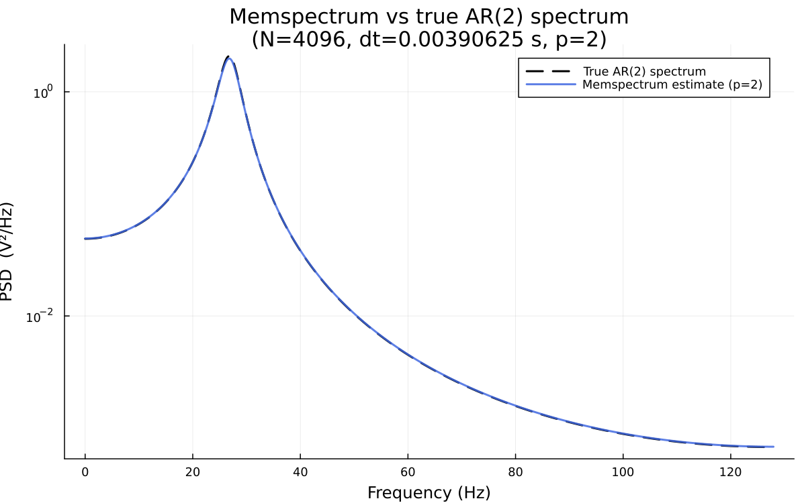
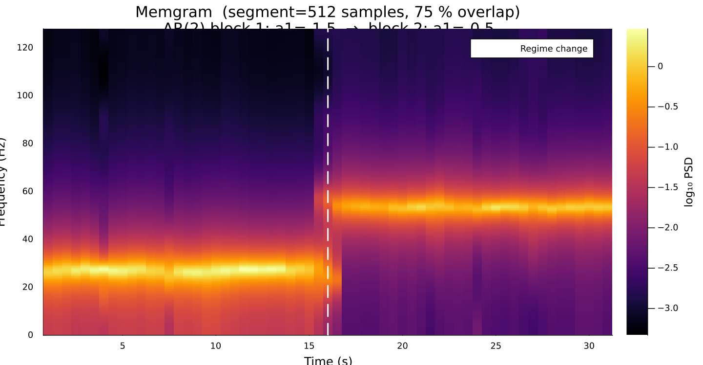
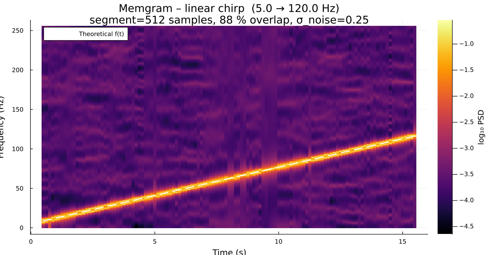

Examples
The examples/ directory in the repository contains ready-to-run scripts. All scripts accept command-line flags and a --config TOML file.
Toy PSD estimate
Generates an AR(2) synthetic time series and compares the MESA estimate against the known analytical spectrum.
julia --project=. examples/toy_psd_estimate.jl
Toy Memgram
Generates a non-stationary AR(2) signal and computes the Memgram.
julia --project=. examples/toy_spectrogram.jl
Chirp Memgram
Generates a linear chirp and computes the Memgram, overlaying the theoretical instantaneous frequency.
julia --project=. examples/chirp_spectrogram.jl
Generate LIGO-like noise
Downloads the LIGO O3 design PSD and generates matching coloured noise.
julia --project=. examples/generate_white_noise.jl --p 300 --t 32 --srate 4096
# or with a config file:
julia --project=. examples/generate_white_noise.jl --config examples/configs/generate_white_noise.tomlConfiguration files
Every example script reads parameters from an optional TOML config file passed via --config <file>. Command-line flags override config-file values. Example:
# examples/configs/toy_psd_estimate.toml
N = 4096
dt = 0.00390625 # 1/256
seed = 42
optimisation_method = "FPE"
method = "Fast"